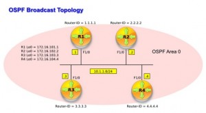
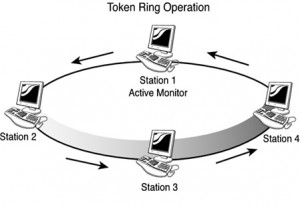
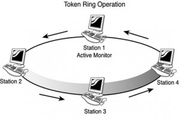

Jenis Topologi Jaringan
| Nama | : | Kamela Fauziah |
| NIM | : | 20833007 |
| Kelas | : | B |
| Dosen Pengampu | : | Aceng Ahmad Rodian Susila, M.Pd. |
Pengertian Topologi Jaringan
Topologi jaringan atau arsitektur jaringan adalah gambaran perencanaan hubungan antarkomputer dalam Local Area Network yang umumnya menggunakan kabel (sebagai media transmisi), dengan konektor, ethernet card, dan perangkat pendukung lainnya.(39:2005 Melwin)
Topologi Jaringan adalah suatu gambaran pola bagaimana piranti jaringan seperti kabel, node, hub/switch, computer server dan computer client itu akan di implementasikan.
Jenis - Jenis Topologi Jaringan
Topologi Logik. Topologi logik mengacu pada cara akses yang bisa digunakan oleh komputer dalam suatu jaringan.
Topologi Fisik. Topologi fisik mengacu kepada lokasi dan juga tata letak semua hardware dan juga peralatan yang dibutuhkan untuk mendukung implementasi dari sebuah toplogi jaringan di dalam satu jaringan komputer. Hal ini juga mengacu pada kedudukan dan juga tata letak pada setiap komputer dan juga device yang akan saling terhubung di dalam suatu jaringan.
Topologi Logik
Topologi logik sendiri memiliki dua jenis, yang menunjukkan bagaimana suatu komputer atau client dapat melakukan akses kepada servernya. Berikut ini adalah kedua jenis toplogi logik :
- Topologi Broadcast

Topologi broadcat merupakan suatu kondisi dimana semua komputer yang berperan sebagai client atau user menerima secara penuh semua data yang dimiliki oleh komputer server atau host, tanpa adanya suatu batasan atau limitasi pada masing – masing user atau client.
- Topologi Token Passing 
topologi token passing mengandalkan sebuah token utnuk memperoleh akses data ke dalam server atau host. Jadi hanya komputer client atau user yan memilki token saja lah yang berhak dan dapat melakukan akses data ke dalam server ataupun host dalam suatu jaringan komputer.
- Topologi Token Passing 
Topologi Fisik
- Topologi Bus

Topologi Bus merupakan suatu bentuk topologi pada jaringan komputer, dimana setiap komputer terhubung secara linear dengan server atau hostnya tanpa menggunakan alat bantu atau hardware yang bersifat aktif, seperti hub ataupun swith. Jaringan komputer yang menggunakan topologi bus ini menggunakan bus sebagai konektor antar kabel dalam satu jaringan, dan menggunakan terminator pada tiap ujung jaringan, yang dapat mencegah terjadinya colission data pada jaringan.
Ciri khas dari topologi bus ini yang memiliki satu jalur umum berbentuk garis lurus, setiap komputer dihubungkan dengan sebuah kabel tunggal yang disebut trunk.
Karenanya topologi bus mempunyai kekurangan jika satu sambungan mengalami gangguan maka sambungan akan terputus, atau mudahnya jikasatu terganggu maka yang lain pun juga mengaami gangguan.
Untuk kecepatan transfer rata-rata data antar perangkat sangat lambat dikarenakan harus bergantian dalam menggunakan jalur komunikasi. Namun layout kabel topologi ini sederhana sehingga instalasi relative lebih mudah,penambahan dan pengurangan terminal dapat dilakukan tanpa mengganggu operasi berjalan.
- Topologi Mesh

Topologi mesh sepertinya merupakan salah satu bentuk topologi jaringan yang paling rumit. Hal ini dikarenakan semua komputer dalam topologi mesh salin gberhubungan dengan sifat yang bolak balik. Itu artinya semua data di dalam komputer yang terhubung di dalam jaringan topologi mesh bisa diakses dengan berbagai macam cara dan dari mana saja. Penggunaan topologi mesh ini sangat tidak cocok apabila menggunakan device ataupun komputer yang banyak, karena akan sangat sulit untuk melakukan pengawasan dan juga pengendalian.
Topologi ini menyerupai bentuk jaring-jaring yang digunakan pada desain jaringan LAN. Topologi ini memiliki tingkat restorasi dengan berbagai alternative.
Dengan topologi ini dapat berkomunikasi langsung dengan perngakat tujuan, karena dapat dikirim lagsung tanpa harus melalui komputer lain dengan satu link digunakan khusus untuk berkomunikasi dengan komputer tujuan. Namun topologi ini memerlukan biaya besar termasuk untuk pemeliharaannya dan juga instalasi serta konfigurasi yang lebih sulit.
- Topologi Ring

Topologi ring merupakan salah satu bentuk topologi yang sudah lama ditinggalkan dan juga jarang digunakan. Topologi ring tidak membutuhkan alat jaringan aktif seperti switch ataupun hub, dan tidak juga memerlukan terminator dan bus seperti topologi jaringan bus. Topologi ini hanya membutuhkan koneksi jaringan antar komputer, dimana antar komputer server dengan kliennya akan terhubung menjadi satu siklus jaringan.
Dalam topologi ring setiap komputer dihubungkan dengan sebuah kabel tunggal sehingga membentuk lingkaran tanpa memiliki ujung kabel. Topologi ini mirip dengan topologi BUS dan setiap komputer akan mempengaruhi sinyal data dari semua komputer. Keunggulan topologi ini adalah dapat melayani aliran lalulintas data yang cepat, transmisi data yang relative sederhana.
- Topologi Star

Topologi star merupakan salah satu jenis topologi pada jaringan komputer yang saat ini paling banyak digunakan. Topologi jaringan star ini memungkinkan sati server memberikan seluruh datanya dengan menggunakan hub ataupun switch secara sekaligus. Itu berarti, setiap komputer yang berperan sebagai client akan memperoleh jumlah kecepatan transfer dan juga data yang sama. Selain itu, topologi star juga memungkinkan setiap komputer memiliki kabel sendiri, sehingga apabila terjadi kegagalan jaringan pada satu komputer, maka hal in itidak akan mengganggu keseluruhan jaringan.
Bentuk dari topologi star ini seperti bintang, karena itulah topologi ini disebut star. Dalam topologi star concentrator tidak menetap atau bisa berubah hub ataupun switch. Dalam topologi ini semua komputer terhubung langsung dengan concentrator(hub/switch). Pengelolaan topologi star termasuk yang termudah dikarenakan memiliki simpul pusat utama dan jika satu komputer terjadi masalah tidak mempengaruhi komputer lain.
- Topologi Tree

Topologi tree merupakan salah satu jenis topologi yang bertingkat. Dengan menggunakan topologi jaringan tree ini, maka dapat dimungkinkan untuk mengkoneksikan jaringan antar komputer dengan hierarki atau tingkatan yang berbeda. Topologi dapat menyatukan beberapa jaringan menjadi satu dengan menggunakan topologi tree.
Topologi ini merupakan kombinasi antara topologi bus dan topologi star. Kumpulan dari topologi star yang dihubungkan dengan topologi bus sebagi backbone.
Topologi ini memiliki jaringan point to point, membagi seluruh jaringan menjadi bagian yang lebih mudah diatur. Namun karena bercabang maka diperlukan cara untuk menunjukkan keamanan data yang dikirim atau tujuan dari transmisi data. Kabel yang digunakan pada topologi tree menjadi banyak karenya perlu perencanna yang matang dalam pengaturannya.
Berikut Penjelasan Video Terkait Topologi Jaringan:
Sumber:
Sutiono. Topologi Jaringan Komputer : Jenis Jenis, Gambar dan Fungsinya. Tersedia: https://dosenit.com/jaringan-komputer/konsep-jaringan/topologi-jaringan-komputer.
Anindya. Jenis Topologi Jaringan: Gambar dan Konsepnya. Tersedia: https://dosenit.com/jaringan-komputer/konsep-jaringan/jenis-topologi-jaringan.
Ghema N, Drs. Afrizal & Salman F.(2022). Mengenal Lebih Dekat Dengan Administrasi Jaringan Komputer. Indramayu: Penerbit Adab.
Syafrizal, M.(2005). Pengantar Jaringan Komputer. Yogyakarta: Penerbit Andi.